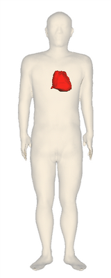

Step1: 静止画を作成する
サンプルコードの出力結果

体表（皮膚）に心臓を赤く表示します。
皮膚は心臓の外側にあるため、半透明で表示し、心臓が見えるようにします。
利用可能な解剖学用語（臓器名）は、BodyParts3Dをご覧ください。
サンプルコードの説明
詳しくは、Javadocをご覧ください。
17行目：
各臓器の属性以外の属性情報（例：画面サイズ、背景色など）を指定するAgPropオブジェクトを作成します。主な属性は以下の通りです。
18行目：
画面サイズを指定します。
属性
|
説明
|
デフォルト値
|
setter例 |
画面サイズ
|
画面の幅(x)、高さ(y) |
x=300,y=300 |
setWinSize(240, 640) |
| 背景色 |
画面背景色 |
R=255,G=255,B=255 |
setBgColor(255, 255, 255) |
| セッションタイムアウト |
サーバからの応答を待つ時間（秒）です。 |
300 |
setTimeOutInSeconds(300) |
21行目から32行目： 各臓器の属性情報を指定するAgOrganオブジェクトを作成し、ArrayList organsに追加します。AgOrganの主な属性は以下の通りです。
| 属性 |
説明 |
デフォルト値 |
setter例 |
| 臓器名 |
臓器名称を英語で指定します。利用可能な臓器名称の一覧は[全登録解剖学用語（五十音順）]です。 |
null |
setName("skin") |
| 臓器色と不透明度 |
臓器色R(0-255)G(0-255)B(0-255)
不透明度A(0.0-1.0)
|
R=240, G=210, B=160, A=1.0 |
setRGBA(240,210,160,1.0) |
35行目：AgPropとAgOrganを引数にgetImageを呼び出して静止画を作成し、そのURLを取得します。
41行目：getImage()で取得した静止画URLからPNG画像ファイルを取得し、sample.pngというファイル名でクライアントに保存します。
サンプルコード
1 import jp.dbcls.ag.AgClient;
2 import jp.dbcls.ag.AgOrgan;
3 import jp.dbcls.ag.AgProp;
4
5 import java.util.ArrayList;
6
7 /**
8 * Step1 簡単な静止画を作成する
9 */
10 public class Step1 {
11 static AgProp prop = null;
12
13 static ArrayList organs = null;
14
15 public static void main(String[] args) throws Exception {
16 /** 各臓器の属性情報以外の属性情報（例：画面サイズ、背景色など）を指定するAgPropオブジェクトを作成します * */
17 prop = new AgProp();
18 prop.setWinSize(240, 640);
19
20 /** 各臓器の属性情報（例：臓器色、臓器不透明度、スカラー値など）を指定するAgOrganオブジェクトのArrayListを作成します。* */
21 organs = new ArrayList();
22 AgOrgan o;
23
24 o = new AgOrgan();
25 o.setName("skin"); // 皮膚を書きます
26 o.setOpacity(0.2); // 不透明度を0.2にして半透明にします。
27 organs.add(o);
28
29 o = new AgOrgan();
30 o.setName("heart"); // 心臓を書きます
31 o.setRGBA(255, 0, 0, 1.0); // 臓器色(R=255,G=0,B=0)を赤にします。
32 organs.add(o);
33
34 /** AgPropとAgOrganを引数にgetImageを呼び出して静止画を作成し、そのURLを取得します。* */
35 String imageurl = AgClient.getImage(prop, organs);
36
37 System.out.println("imageurl=" + imageurl);
38 String imagefile = "step1.png";
39
40 /** 静止画のURL(imageurl)から静止画ファイルを取得し、指定したファイル名(imagefile=step1.png)に保存します。* */
41 AgClient.saveFile(imageurl, imagefile);
42 }
43 }